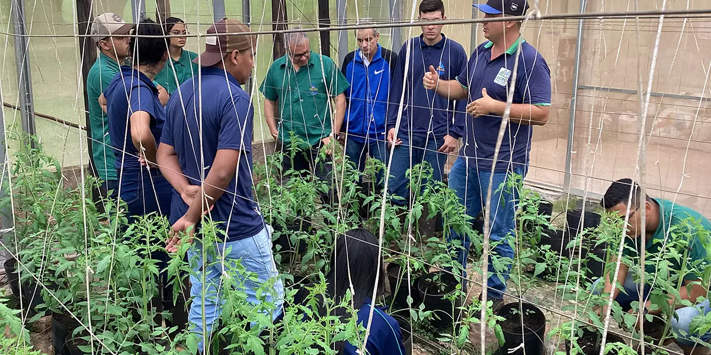

ESCOLA TÉCNICA AGROPECUÁRIA TEREZA DELTA

O Curso Técnico em Agropecuária tem o objetivo de formar profissionais habilitados para atuar junto ao setor produtivo, em atividades de gestão, planejamento, projetos, produção animal, vegetal e agroindustrial, tendo como competência básica atender de forma sistemática às necessidades de organização e produção dos diversos segmentos da agricultura familiar e do agronegócio, colaborando para melhorar a qualidade e a sustentabilidade econômica, ambiental e social da região. As aulas ocorrem de segunda a sexta-feira, das 08h00 às 16h10 e, excepcionalmente aos sábados, das 7h45 às 11h20, conforme calendário escolar do Curso Técnico, com 8 aulas diárias e 40 aulas semanais (hora-aula com duração de 50 minutos).
- Número de vagas: 40 por semestre
- Período: Integral
- Carga horária: 1.600 horas
- Duração: curso organizado em dois períodos semestrais
- Eixo Tecnológico: recursos naturais
MATRIZ CURRICULAR
- Agricultura
- Biotecnologia Agrícola
- Bovinocultura de Corte
- Bovinocultura de Leite
- Cultura Anuais I
- Ética Profissional
- Floricultura e Jardinagem
- Manejo e Conservação do Solo
- Matemática Básica / Estatistica
- Mecanização para Agropecuária
- Normas Técnicas e Redação
- Segurança e Meio Ambiente
- Suinocultura
- Tecnologia de Informação
- Topografia
- Agricultura de Precisão
- Avicultura
- Cultura Anuais II
- Culturas Parenes e Semi Parenes
- Forragicultura e Pastagens
- Fruticultura
- Gestão de Qualidade
- Gestão e Empreendedorismo no Agronegócio
- Irrigação e Drenagem para Agropecuária
- Metodologia do Trabalho Científico
- Nutrição Animal
- Olericultura
- Tecnologia de Alimentos
- Tecnologia de Informação Agrícola